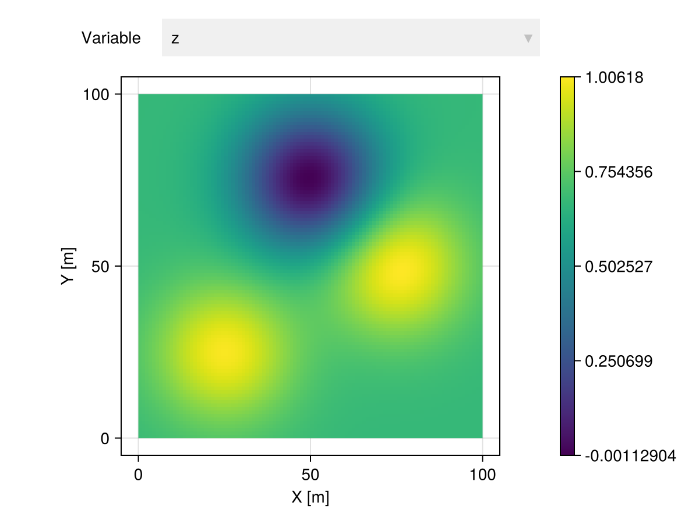
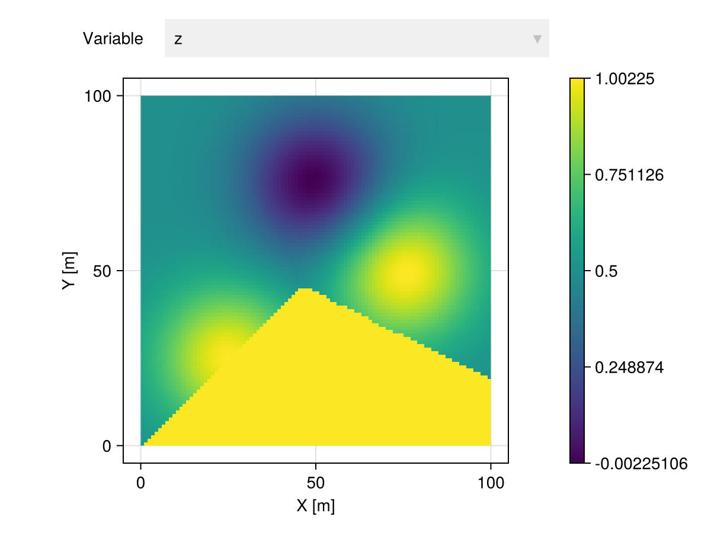

Why Kriging interpolation is slow?
You are probably using Interpolate when you should be using InterpolateNeighbors.
The Kriging model relies on the construction of a $N \times N$ matrix where $N$ is the number of rows of the input GeoTable. The Interpolate transform will attempt to construct the full linear system, which may not be feasible memory-wise. On the other hand, the InterpolateNeighbors transform constructs multiple linear systems with a maximum number of neighbors. It scales to very large datasets.
Exact interpolation
The Interpolate transform is exact, and hence it is recommended if the number of rows of the geotable is small:
gtb = georef((; z=[1.,0.,1.]), [(25.,25.), (50.,75.), (75.,50.)])
grid = CartesianGrid(100, 100)
model = Kriging(GaussianVariogram(range=35.))
interp = gtb |> Interpolate(grid, model=model)
interp |> viewer
Approximate interpolation
The InterpolateNeighbors transform is approximate. The choice of parameters determines the quality of the result, and poor choices can lead to visual artifacts.
In the example below the input GeoTable has 3 locations with values, and we request a maximum of 2 neighboring locations:
interp = gtb |> InterpolateNeighbors(grid, model=model, maxneighbors=2)
interp |> viewer
The 2 nearest locations to all locations at the bottom of the image have the same value, and this value is propagated as a constant by the local linear systems.